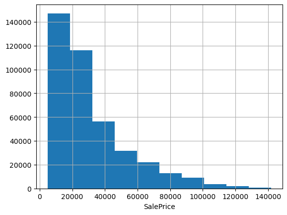
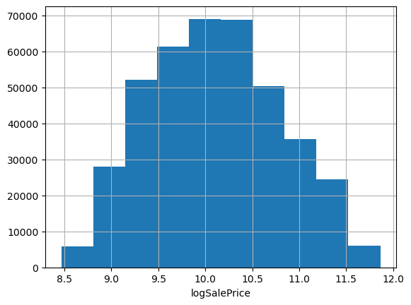
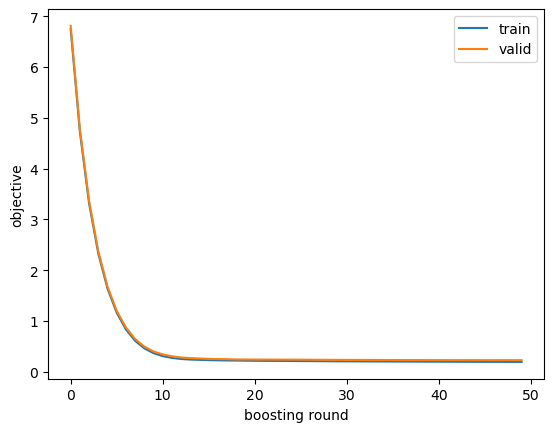
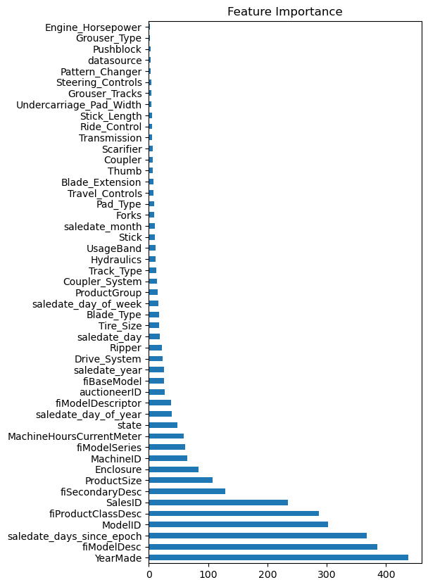

import numpy as np
import pandas as pd
import matplotlib.pyplot as plt
import xgboost as xgbXGBoost for Regression in Python
python
tutorial
gradient boosting
xgboost
A step-bystep tutorial on regression with XGBoost in python using sklearn and the xgboost library
In this post I’m going to show you my process for solving regression problems with XGBoost in python, using either the native xgboost API or the scikit-learn interface. This is a powerful methodology that can produce world class results in a short time with minimal thought or effort. While we’ll be working on an old Kagle competition for predicting the sale prices of bulldozers and other heavy machinery, you can use this flow to solve whatever tabular data regression problem you’re working on.
This post serves as the explanation and documentation for the XGBoost regression jupyter notebook from my ds-templates repo on GitHub, so go ahead and download the notebook and follow along with your own data.
If you’re not already comfortable with the ideas behind gradient boosting and XGBoost, you’ll find it helpful to read some of my previous posts to get up to speed. I’d start with this introduction to gradient boosting, and then read this explanation of how XGBoost works.
Let’s get into it! 🚀
Install and import the xgboost library
If you don’t already have it, go ahead and use conda to install the xgboost library, e.g.
$ conda install -c conda-forge xgboostThen import it along with the usual suspects.
Read dataset into python
In this example we’ll work on the Kagle Bluebook for Bulldozers competition, which asks us to build a regression model to predict the sale price of heavy equipment. Amazingly, you can solve your own regression problem by swapping this data out with your organization’s data before proceeding with the tutorial.
Go ahead and download the Train.zip file from Kagle and extract it into Train.csv. Then read the data into a pandas dataframe.
df = pd.read_csv('Train.csv', parse_dates=['saledate']);Notice I cheated a little bit, checking the columns ahead of time and telling pandas to treat the saledate column as a date. In general it will make life easier to read in any date-like columns as dates.
df.info()<class 'pandas.core.frame.DataFrame'>
RangeIndex: 401125 entries, 0 to 401124
Data columns (total 53 columns):
# Column Non-Null Count Dtype
--- ------ -------------- -----
0 SalesID 401125 non-null int64
1 SalePrice 401125 non-null int64
2 MachineID 401125 non-null int64
3 ModelID 401125 non-null int64
4 datasource 401125 non-null int64
5 auctioneerID 380989 non-null float64
6 YearMade 401125 non-null int64
7 MachineHoursCurrentMeter 142765 non-null float64
8 UsageBand 69639 non-null object
9 saledate 401125 non-null datetime64[ns]
10 fiModelDesc 401125 non-null object
11 fiBaseModel 401125 non-null object
12 fiSecondaryDesc 263934 non-null object
13 fiModelSeries 56908 non-null object
14 fiModelDescriptor 71919 non-null object
15 ProductSize 190350 non-null object
16 fiProductClassDesc 401125 non-null object
17 state 401125 non-null object
18 ProductGroup 401125 non-null object
19 ProductGroupDesc 401125 non-null object
20 Drive_System 104361 non-null object
21 Enclosure 400800 non-null object
22 Forks 192077 non-null object
23 Pad_Type 79134 non-null object
24 Ride_Control 148606 non-null object
25 Stick 79134 non-null object
26 Transmission 183230 non-null object
27 Turbocharged 79134 non-null object
28 Blade_Extension 25219 non-null object
29 Blade_Width 25219 non-null object
30 Enclosure_Type 25219 non-null object
31 Engine_Horsepower 25219 non-null object
32 Hydraulics 320570 non-null object
33 Pushblock 25219 non-null object
34 Ripper 104137 non-null object
35 Scarifier 25230 non-null object
36 Tip_Control 25219 non-null object
37 Tire_Size 94718 non-null object
38 Coupler 213952 non-null object
39 Coupler_System 43458 non-null object
40 Grouser_Tracks 43362 non-null object
41 Hydraulics_Flow 43362 non-null object
42 Track_Type 99153 non-null object
43 Undercarriage_Pad_Width 99872 non-null object
44 Stick_Length 99218 non-null object
45 Thumb 99288 non-null object
46 Pattern_Changer 99218 non-null object
47 Grouser_Type 99153 non-null object
48 Backhoe_Mounting 78672 non-null object
49 Blade_Type 79833 non-null object
50 Travel_Controls 79834 non-null object
51 Differential_Type 69411 non-null object
52 Steering_Controls 69369 non-null object
dtypes: datetime64[ns](1), float64(2), int64(6), object(44)
memory usage: 162.2+ MBPrepare raw data for XGBoost
When faced with a new tabular dataset for modeling, we have two format considerations: data types and missingness. From the call to df.info() above, we can see we have both mixed types and missing values.
When it comes to missing values, some models like the gradient booster or random forest in scikit-learn require purely non-missing inputs. One of the great strengths of XGBoost is that it relaxes this requirement, allowing us to pass in missing feature values, so we don’t have to worry about them.
Regarding data types, all ML models for tabular data require inputs to be numeric, either integers or floats, so we’re going to have to deal with those object columns.
Encode string features
The simplest way to encode string variables is to map each unique string value to an integer; this is called integer encoding.
We have a couple of options for how to implement this transformation: pandas categoricals or the scikit-learn label encoder. We can use the categorical type in pandas to generate mappings from string values to integers for each string feature. The category type is a bit like the factor type in R. Pandas stores the underlying data as integers, and it also keeps a mapping from the integers to the string values. XGBoost will be able to access the integers for model fitting. This is nice because we can still access the actual categories which can be helpful when we start taking a closer look at the data. If you prefer, you can also use the scikit-learn label encoder to replace the string columns with their integer-mapped counterparts.
def encode_string_features(df, use_cats=True):
out_df = df.copy()
for feature, feature_type in df.dtypes.items():
if feature_type == 'object':
if use_cats:
out_df[feature] = out_df[feature].astype('category')
else:
from sklearn.preprocessing import LabelEncoder
out_df[feature] = LabelEncoder() \
.fit_transform(out_df[feature].astype('str'))
return out_df
df = encode_string_features(df, use_cats=False)Encode date and timestamp features
While dates feel sort of numeric, they are not numbers, so we need to transform them into numeric columns. Unfortunately, encoding timestamps isn’t as straightforward as encoding strings, so we actually might need to engage in a little bit of feature engineering. A single date has many different attributes, e.g. days since epoch, year, quarter, month, day, day of year, day of week, is holiday, etc. As a starting point, we can just add a few of these attributes as features. Once a feature is represented as a date or timestamp data type, you can access various attributes via the dt attribute.
def encode_datetime_features(df, datetime_features, datetime_attributes):
out_df = df.copy()
for datetime_feature in datetime_features:
for datetime_attribute in datetime_attributes:
if datetime_attribute == 'days_since_epoch':
out_df[f'{datetime_feature}_{datetime_attribute}'] = \
(out_df[datetime_feature]
- pd.Timestamp(year=1970, month=1, day=1)).dt.days
else:
out_df[f'{datetime_feature}_{datetime_attribute}'] = \
getattr(out_df[datetime_feature].dt, datetime_attribute)
return out_df
datetime_features = [
'saledate',
]
datetime_attributes = [
'year',
'month',
'day',
'quarter',
'day_of_year',
'day_of_week',
'days_since_epoch',
]
df = encode_datetime_features(df, datetime_features, datetime_attributes)Transform the target if necessary
In the interest of speed and efficiency, we didn’t bother doing any EDA with the feature data. Part of my justification for this is that trees are incredibly robust to outliers, colinearity, missingness, and other assorted nonsense in the feature data. However, they are not necessarily robust to nonsense in the target variable, so it’s worth having a look at it before proceeding any further.
df.SalePrice.hist(); plt.xlabel('SalePrice');
Often when predicting prices it makes sense to use log price, especially when they span multiple orders of magnitude or have a strong right skew. These data look pretty friendly, lacking outliers and exhibiting only a mild positive skew; we could probably get away without doing any transformation. But checking the evaluation metric used to score the Kagle competition, we see they’re using root mean squared log error. That’s equivalent to using RMSE on log-transformed target data, so let’s go ahead and work with log prices.
df['logSalePrice'] = np.log1p(df['SalePrice'])
df.logSalePrice.hist(); plt.xlabel('logSalePrice');
A note on data transformation robustness
Before we jump into training models, let’s talk about how our approach to data transformation might differ between initial modeling explorations and building robust production-ready ML applications. When faced with a new modeling problem, our priority is usually to get a prototype model working ASAP. Often it’s fastest and easiest to apply transformations to the entire dataset before splitting it into training and validation subsets and commencing model iterations. That’s the approach we’re taking here.
As we move beyond proof of concept toward a production-ready ML application, we would want to start thinking carefully about robustness in our data transformations. Considerations might include issues like how we handle prediction with new values of categorical variables which were not present in training or how to prevent leakage in transformations that compute statistics over the entire dataset. We can benefit from using tools like scikit-learn’s Pipeline to chain transformations together and prevent leaking information from the training data into the validation data. We’ll save the details of robust data transformation for another post.
Train and Evaluate the XGBoost regression model
Having prepared our dataset, we are now ready to train an XGBoost model. We’ll walk through the flow step-by-step first, then later we’ll collect the code in a single cell, so it’s easier to quickly iterate through variations of the model.
Specify target and feature columns
First we’ll put together a list of our features and define the target column. I like to have an actual list defined in the code so it’s easier to see everything we’re puting into the model and easier to add or remove features as we iterate. Just run something like list(df.columns) in a cel to get a copy-pasteable list of columns, then edit it down to the full list of features, i.e. remove the target, date columns, and other non-feature columns..
# list(df.columns)features = [
'SalesID',
'MachineID',
'ModelID',
'datasource',
'auctioneerID',
'YearMade',
'MachineHoursCurrentMeter',
'UsageBand',
'fiModelDesc',
'fiBaseModel',
'fiSecondaryDesc',
'fiModelSeries',
'fiModelDescriptor',
'ProductSize',
'fiProductClassDesc',
'state',
'ProductGroup',
'ProductGroupDesc',
'Drive_System',
'Enclosure',
'Forks',
'Pad_Type',
'Ride_Control',
'Stick',
'Transmission',
'Turbocharged',
'Blade_Extension',
'Blade_Width',
'Enclosure_Type',
'Engine_Horsepower',
'Hydraulics',
'Pushblock',
'Ripper',
'Scarifier',
'Tip_Control',
'Tire_Size',
'Coupler',
'Coupler_System',
'Grouser_Tracks',
'Hydraulics_Flow',
'Track_Type',
'Undercarriage_Pad_Width',
'Stick_Length',
'Thumb',
'Pattern_Changer',
'Grouser_Type',
'Backhoe_Mounting',
'Blade_Type',
'Travel_Controls',
'Differential_Type',
'Steering_Controls',
'saledate_year',
'saledate_month',
'saledate_day',
'saledate_quarter',
'saledate_day_of_year',
'saledate_day_of_week',
'saledate_days_since_epoch'
]
target = 'logSalePrice'Split the data into training and validation sets
Next we split the dataset into a training set and a validation set. Of course since we’re going to evaluate against the validation set a number of times as we iterate, it’s best practice to keep a separate test set reserved to check our final model to ensure it generalizes well. Assuming that final test set is hidden away, we can use the rest of the data for training and validation.
There are two main ways we might want to select the validation set. If there isn’t a temporal ordering of the observations, we might be able to randomly sample. In practice, it’s much more common that observations have a temporal ordering, and that models are trained on observations up to a certain time and used to predict on observations occuring after that time. Since this data is temporal, we don’t want to split randomly; instead we’ll split on observation date, reserving the latest observations for the validation set.
# Temporal Validation Set
def train_test_split_temporal(df, datetime_column, n_test):
idx_sort = np.argsort(df[datetime_column])
idx_train, idx_test = idx_sort[:-n_valid], idx_sort[-n_valid:]
return df.iloc[idx_train, :], df.iloc[idx_test, :]
# Random Validation Set
def train_test_split_random(df, n_test):
np.random.seed(42)
idx_sort = np.random.permutation(len(df))
idx_train, idx_test = idx_sort[:-n_valid], idx_sort[-n_valid:]
return df.iloc[idx_train, :], df.iloc[idx_test, :]
my_train_test_split = lambda d, n_valid: train_test_split_temporal(d, 'saledate', n_valid)
# my_train_test_split = lambda d, n_valid: train_test_split_random(d, n_valid)n_valid = 12000
train_df, valid_df = my_train_test_split(df, n_valid)
train_df.shape, valid_df.shape((389125, 61), (12000, 61))Create DMatrix data objects
XGBoost uses a data type called dense matrix for efficient training and prediction, so next we need to create DMatrix objects for our training and validation datasets.
If you prefer to use the scikit-learn interface to XGBoost, you don’t need to create these dense matrix objects. More on that below.
dtrain = xgb.DMatrix(data=train_df[features], label=train_df[target], enable_categorical=True)
dvalid = xgb.DMatrix(data=valid_df[features], label=valid_df[target], enable_categorical=True)Set the XGBoost parameters
XGBoost has numerous hyperparameters. Fortunately, just a handful of them tend to be the most influential; furthermore, the default values are not bad in most situations. I like to start out with a dictionary containing the default parameter values for just the ones I think are most important. For training there is one required boosting parameter called num_boost_round which I set to 50 as a starting point; you can make this smaller initially if training takes too long.
# default values for important parameters
params = {
'learning_rate': 0.3,
'max_depth': 6,
'min_child_weight': 1,
'subsample': 1,
'colsample_bynode': 1,
'objective': 'reg:squarederror',
}
num_boost_round = 50Train the XGBoost model
Check out the documentation on the learning API to see all the training options. During training, I like to have XGBoost print out the evaluation metric on the train and validation set after every few boosting rounds and again at the end of training; that can be done by setting evals and verbose_eval. You can also save the evaluation results in a dictionary passed into evals_result to inspect and plot the objective curve over the training iterations.
evals_result = {}
m = xgb.train(params=params, dtrain=dtrain, num_boost_round=num_boost_round,
evals=[(dtrain, 'train'), (dvalid, 'valid')],
verbose_eval=10,
evals_result=evals_result)[0] train-rmse:6.74422 valid-rmse:6.79733
[10] train-rmse:0.34798 valid-rmse:0.37158
[20] train-rmse:0.26289 valid-rmse:0.28239
[30] train-rmse:0.25148 valid-rmse:0.27028
[40] train-rmse:0.24375 valid-rmse:0.26420
[49] train-rmse:0.23738 valid-rmse:0.25855Train the XGBoost model using the sklearn interface
You can optionally use the sklearn estimator interface to XGBoost. This will bypass the need to use the DMatrix data objects for training and prediction, and it will allow you to leverage many of the other scikit-learn ecosystem tools like pipelines, parameter search, partial dependence plots, etc. The XGBRegressor is available in the xgboost library that we’ve already imported.
# scikit-learn interface
reg = xgb.XGBRegressor(n_estimators=num_boost_round, **params)
reg.fit(train_df[features], train_df[target],
eval_set=[(train_df[features], train_df[target]), (valid_df[features], valid_df[target])],
verbose=10);[0] validation_0-rmse:6.74422 validation_1-rmse:6.79733
[10] validation_0-rmse:0.34798 validation_1-rmse:0.37158
[20] validation_0-rmse:0.26289 validation_1-rmse:0.28239
[30] validation_0-rmse:0.25148 validation_1-rmse:0.27028
[40] validation_0-rmse:0.24375 validation_1-rmse:0.26420
[49] validation_0-rmse:0.23738 validation_1-rmse:0.25855Since not all features of XGBoost are available through the scikit-learn estimator interface, you might want to get the native booster object back out of the sklearn wrapper.
m = reg.get_booster()Evaluate the model and check for overfitting
We get the model evaluation metrics on the training and validation sets printed to stdout when we use the evals argument to the training API. Typically I just look at those printed metrics, but let’s double check by hand.
def root_mean_squared_error(y_true, y_pred):
return np.sqrt(np.mean((y_true - y_pred)**2))
root_mean_squared_error(dvalid.get_label(), m.predict(dvalid))0.25855368So, how good is that RMSLE of 0.259? Well, checking the Kagle leaderboard for this competition, we would have come in 53rd out of 474, which is in the top 12% of submissions. That’s not bad for 10 minutes of work doing the bare minimum necessary to transform the raw data into a format consumable by XGBoost and then training a model using default hyperparameter values.
Note that we’re using a different validation set from that used for the final leaderboard (which is long closed), but our score is likely still a decent approximation for how we would have done in the competition.
It can be helpful to take a look at objective curves for training and validation data to get a sense for the extent of overfitting. A huge difference between training and validation performance indicates overfitting. In the below curve, there is very little overfitting, indicating we can be aggressive with hyperparameters that increase model flexibility. More on that soon.
pd.DataFrame({
'train': evals_result['train']['rmse'],
'valid': evals_result['valid']['rmse']
}).plot(); plt.xlabel('boosting round'); plt.ylabel('objective');
Check feature importance
It’s helpful to get an idea of how much the model is using each feature. In following iterations we might want to try dropping low-signal features or examining the important ones more closely for feature engineering ideas. The gigantic caveat to keep in mind here is that there are different measures of feature importance, and each one will give different importances. XGBoost provides three importance measures; I tend to prefer looking at the weight measure because its rankings usually seem most intuitive.
fig, ax = plt.subplots(figsize=(5,10))
feature_importances = pd.Series(m.get_score(importance_type='weight')).sort_values(ascending=False)
feature_importances.plot.barh(ax=ax)
plt.title('Feature Importance');
Improve performance using a model iteration loop
At this point we have a half-decent prototype model. Now we enter the model iteration loop in which we adjust features and model parameters to find configurations that have better and better performance.
Let’s start by putting the feature and target specification, the training/validation split, the model training, and the evaluation all together in one code block that we can copy paste for easy model iteration.
Note that for this process to be effective, model training needs to take less than 10 seconds. Otherwise you’ll be sitting around waiting way too long. If training takes too long, try training on a sample of the training data, or try reducing the number of boosting rounds.
features = [
'SalesID',
'MachineID',
'ModelID',
'datasource',
'auctioneerID',
'YearMade',
'MachineHoursCurrentMeter',
'UsageBand',
'fiModelDesc',
'fiBaseModel',
'fiSecondaryDesc',
'fiModelSeries',
'fiModelDescriptor',
'ProductSize',
'fiProductClassDesc',
'state',
'ProductGroup',
'ProductGroupDesc',
'Drive_System',
'Enclosure',
'Forks',
'Pad_Type',
'Ride_Control',
'Stick',
'Transmission',
'Turbocharged',
'Blade_Extension',
'Blade_Width',
'Enclosure_Type',
'Engine_Horsepower',
'Hydraulics',
'Pushblock',
'Ripper',
'Scarifier',
'Tip_Control',
'Tire_Size',
'Coupler',
'Coupler_System',
'Grouser_Tracks',
'Hydraulics_Flow',
'Track_Type',
'Undercarriage_Pad_Width',
'Stick_Length',
'Thumb',
'Pattern_Changer',
'Grouser_Type',
'Backhoe_Mounting',
'Blade_Type',
'Travel_Controls',
'Differential_Type',
'Steering_Controls',
'saledate_year',
'saledate_month',
'saledate_day',
'saledate_quarter',
'saledate_day_of_year',
'saledate_day_of_week',
'saledate_days_since_epoch',
]
target = 'logSalePrice'
train_df, valid_df = train_test_split_temporal(df, 'saledate', 12000)
dtrain = xgb.DMatrix(data=train_df[features], label=train_df[target], enable_categorical=True)
dvalid = xgb.DMatrix(data=valid_df[features], label=valid_df[target], enable_categorical=True)
params = {
'learning_rate': 0.3,
'max_depth': 6,
'min_child_weight': 1,
'subsample': 1,
'colsample_bynode': 1,
'objective': 'reg:squarederror',
}
num_boost_round = 50
m = xgb.train(params=params, dtrain=dtrain, num_boost_round=num_boost_round,
evals=[(dtrain, 'train'), (dvalid, 'valid')],verbose_eval=10)[0] train-rmse:6.74422 valid-rmse:6.79733
[10] train-rmse:0.34798 valid-rmse:0.37158
[20] train-rmse:0.26289 valid-rmse:0.28239
[30] train-rmse:0.25148 valid-rmse:0.27028
[40] train-rmse:0.24375 valid-rmse:0.26420
[49] train-rmse:0.23738 valid-rmse:0.25855Feature selection
Drop low-importance features
Let’s try training a model on only the top k most important features. You can try different values of k for the rankings created from each of the three importance measures. You can play with how many to keep, looking for the optimal number manually.
feature_importances_weight = pd.Series(m.get_score(importance_type='weight')).sort_values(ascending=False)
feature_importances_cover = pd.Series(m.get_score(importance_type='cover')).sort_values(ascending=False)
feature_importances_gain = pd.Series(m.get_score(importance_type='gain')).sort_values(ascending=False)# features = list(feature_importances_weight[:30].index)
# features = list(feature_importances_cover[:35].index)
features = list(feature_importances_gain[:30].index)
dtrain = xgb.DMatrix(data=train_df[features], label=train_df[target], enable_categorical=True)
dvalid = xgb.DMatrix(data=valid_df[features], label=valid_df[target], enable_categorical=True)
params = {
'learning_rate': 0.3,
'max_depth': 6,
'min_child_weight': 1,
'subsample': 1,
'colsample_bynode': 1,
'objective': 'reg:squarederror',
}
num_boost_round = 50
m = xgb.train(params=params, dtrain=dtrain, num_boost_round=num_boost_round,
evals=[(dtrain, 'train'), (dvalid, 'valid')], verbose_eval=10)[0] train-rmse:6.74422 valid-rmse:6.79733
[10] train-rmse:0.34798 valid-rmse:0.37150
[20] train-rmse:0.26182 valid-rmse:0.27986
[30] train-rmse:0.24974 valid-rmse:0.26896
[40] train-rmse:0.24282 valid-rmse:0.26043
[49] train-rmse:0.23768 valid-rmse:0.25664Looks like keeping the top 30 from the gain importance type gives a slight performance improvement.
Drop one feature at a time
Next try dropping each feature out of the model one-at-a-time to see if there are any more features that you can drop. For each feature, drop it from the feature set, then train a new model, then record the evaluation score. At the end, sort the scores to see which features are the best candidates for removal.
features = [
'Coupler_System',
'Tire_Size',
'Scarifier',
'ProductSize',
'Ride_Control',
'fiBaseModel',
'Enclosure',
'Pad_Type',
'YearMade',
'fiSecondaryDesc',
'ProductGroup',
'Drive_System',
'Ripper',
'saledate_days_since_epoch',
'fiModelDescriptor',
'fiProductClassDesc',
'MachineID',
'Hydraulics',
'SalesID',
'Track_Type',
'ModelID',
'fiModelDesc',
'Travel_Controls',
'Transmission',
'Blade_Extension',
'fiModelSeries',
'Grouser_Tracks',
'Undercarriage_Pad_Width',
'Stick',
'Thumb'
]
# drop each feature one-at-a-time
scores = []
for i, feature in enumerate(features):
drop_one_features = features[:i] + features[i+1:]
dtrain = xgb.DMatrix(data=train_df[drop_one_features], label=train_df[target], enable_categorical=True)
dvalid = xgb.DMatrix(data=valid_df[drop_one_features], label=valid_df[target], enable_categorical=True)
params = {
'learning_rate': 0.3,
'max_depth': 6,
'min_child_weight': 1,
'subsample': 1,
'colsample_bynode': 1,
'objective': 'reg:squarederror',
}
num_boost_round = 50
m = xgb.train(params=params, dtrain=dtrain, num_boost_round=num_boost_round,
evals=[(dtrain, 'train'), (dvalid, 'valid')],
verbose_eval=False)
score = root_mean_squared_error(dvalid.get_label(), m.predict(dvalid))
scores.append(score)
results_df = pd.DataFrame({
'feature': features,
'score': scores
})
results_df.sort_values(by='score')| feature | score | |
|---|---|---|
| 18 | SalesID | 0.252617 |
| 5 | fiBaseModel | 0.253710 |
| 27 | Undercarriage_Pad_Width | 0.254032 |
| 17 | Hydraulics | 0.254114 |
| 20 | ModelID | 0.254169 |
| 4 | Ride_Control | 0.254278 |
| 16 | MachineID | 0.254413 |
| 19 | Track_Type | 0.254825 |
| 6 | Enclosure | 0.254958 |
| 28 | Stick | 0.255164 |
| 1 | Tire_Size | 0.255365 |
| 10 | ProductGroup | 0.255404 |
| 22 | Travel_Controls | 0.255895 |
| 29 | Thumb | 0.256300 |
| 23 | Transmission | 0.256380 |
| 26 | Grouser_Tracks | 0.256395 |
| 11 | Drive_System | 0.256652 |
| 24 | Blade_Extension | 0.256698 |
| 7 | Pad_Type | 0.256952 |
| 25 | fiModelSeries | 0.257073 |
| 2 | Scarifier | 0.257590 |
| 12 | Ripper | 0.257848 |
| 0 | Coupler_System | 0.258074 |
| 21 | fiModelDesc | 0.258712 |
| 13 | saledate_days_since_epoch | 0.259856 |
| 14 | fiModelDescriptor | 0.260439 |
| 9 | fiSecondaryDesc | 0.260782 |
| 15 | fiProductClassDesc | 0.263790 |
| 3 | ProductSize | 0.268068 |
| 8 | YearMade | 0.313105 |
Next try removing the feature with the best removal score. Then with that feature still removed, also try removing the feature with the next best removal score and so on. Repeat this process until the model evaluation metric is no longer improving. I think this could be considered a faster version of backward stepwise feature selection.
features = [
'Coupler_System',
'Tire_Size',
'Scarifier',
'ProductSize',
'Ride_Control',
# 'fiBaseModel',
'Enclosure',
'Pad_Type',
'YearMade',
'fiSecondaryDesc',
'ProductGroup',
'Drive_System',
'Ripper',
'saledate_days_since_epoch',
'fiModelDescriptor',
'fiProductClassDesc',
'MachineID',
# 'Hydraulics',
# 'SalesID',
'Track_Type',
'ModelID',
'fiModelDesc',
'Travel_Controls',
'Transmission',
'Blade_Extension',
'fiModelSeries',
'Grouser_Tracks',
# 'Undercarriage_Pad_Width',
'Stick',
'Thumb'
]
dtrain = xgb.DMatrix(data=train_df[features], label=train_df[target], enable_categorical=True)
dvalid = xgb.DMatrix(data=valid_df[features], label=valid_df[target], enable_categorical=True)
params = {
'learning_rate': 0.3,
'max_depth': 6,
'min_child_weight': 1,
'subsample': 1,
'colsample_bynode': 1,
'objective': 'reg:squarederror',
}
num_boost_round = 50
m = xgb.train(params=params, dtrain=dtrain, num_boost_round=num_boost_round,
evals=[(dtrain, 'train'), (dvalid, 'valid')], verbose_eval=10)[0] train-rmse:6.74422 valid-rmse:6.79145
[10] train-rmse:0.34882 valid-rmse:0.37201
[20] train-rmse:0.26050 valid-rmse:0.27386
[30] train-rmse:0.24844 valid-rmse:0.26205
[40] train-rmse:0.24042 valid-rmse:0.25426
[49] train-rmse:0.23549 valid-rmse:0.25004So here I was able to remove four more features before the score started getting worse. With our reduced feature set, we’re now ranking 39th on that Kagle leaderboard. Let’s see how far we can get with some hyperparameter tuning.
Tune the XGBoost hyperparameters
This is a topic which deserves its own full-length post, but just for fun, here I’ll do a quick and dirty hand tuning without a ton of explanation.
Broadly speaking, my process is to increase model expressiveness by increasing the maximum tree depth untill it looks like I’m overfitting. At that point, I start pushing tree pruning parameters like min child weight and regularization parameters like lambda to counteract the overfitting. That process lead me to the following parameters.
params = {
'learning_rate': 0.3,
'max_depth': 10,
'min_child_weight': 14,
'lambda': 5,
'subsample': 1,
'colsample_bynode': 1,
'objective': 'reg:squarederror',}
num_boost_round = 50
m = xgb.train(params=params, dtrain=dtrain, num_boost_round=num_boost_round,
evals=[(dtrain, 'train'), (dvalid, 'valid')], verbose_eval=10)[0] train-rmse:6.74473 valid-rmse:6.80196
[10] train-rmse:0.31833 valid-rmse:0.34151
[20] train-rmse:0.22651 valid-rmse:0.24885
[30] train-rmse:0.21501 valid-rmse:0.23904
[40] train-rmse:0.20897 valid-rmse:0.23645
[49] train-rmse:0.20418 valid-rmse:0.23412That gets us up to 12th place. Next I start reducing the learning rate and increasing the boosting rounds in proportion to one another.
params = {
'learning_rate': 0.3/5,
'max_depth': 10,
'min_child_weight': 14,
'lambda': 5,
'subsample': 1,
'colsample_bynode': 1,
'objective': 'reg:squarederror',}
num_boost_round = 50*5
m = xgb.train(params=params, dtrain=dtrain, num_boost_round=num_boost_round,
evals=[(dtrain, 'train'), (dvalid, 'valid')], verbose_eval=10)[0] train-rmse:9.04930 valid-rmse:9.12743
[10] train-rmse:4.88505 valid-rmse:4.93769
[20] train-rmse:2.64630 valid-rmse:2.68501
[30] train-rmse:1.44703 valid-rmse:1.47923
[40] train-rmse:0.81123 valid-rmse:0.84079
[50] train-rmse:0.48441 valid-rmse:0.51272
[60] train-rmse:0.32887 valid-rmse:0.35434
[70] train-rmse:0.26276 valid-rmse:0.28630
[80] train-rmse:0.23720 valid-rmse:0.26026
[90] train-rmse:0.22658 valid-rmse:0.24932
[100] train-rmse:0.22119 valid-rmse:0.24441
[110] train-rmse:0.21747 valid-rmse:0.24114
[120] train-rmse:0.21479 valid-rmse:0.23923
[130] train-rmse:0.21250 valid-rmse:0.23768
[140] train-rmse:0.21099 valid-rmse:0.23618
[150] train-rmse:0.20928 valid-rmse:0.23524
[160] train-rmse:0.20767 valid-rmse:0.23445
[170] train-rmse:0.20658 valid-rmse:0.23375
[180] train-rmse:0.20558 valid-rmse:0.23307
[190] train-rmse:0.20431 valid-rmse:0.23252
[200] train-rmse:0.20316 valid-rmse:0.23181
[210] train-rmse:0.20226 valid-rmse:0.23145
[220] train-rmse:0.20133 valid-rmse:0.23087
[230] train-rmse:0.20045 valid-rmse:0.23048
[240] train-rmse:0.19976 valid-rmse:0.23023
[249] train-rmse:0.19902 valid-rmse:0.23009Decreasing the learning rate and increasing the boosting rounds got us up to a 2nd place score. Notice that the score is still decreasing on the validation set. We can actually continue boosting on this model by passing it to the xgb_model argument in the train function. We want to go very very slowly here to avoid overshooting the minimum of the objective function. To do that I ramp up the lambda regularization parameter and boost a few more rounds from where we left off.
# second stage
params = {
'learning_rate': 0.3/10,
'max_depth': 10,
'min_child_weight': 14,
'lambda': 60,
'subsample': 1,
'colsample_bynode': 1,
'objective': 'reg:squarederror',}
num_boost_round = 50*3
m1 = xgb.train(params=params, dtrain=dtrain, num_boost_round=num_boost_round,
evals=[(dtrain, 'train'), (dvalid, 'valid')], verbose_eval=10,
xgb_model=m)[0] train-rmse:0.19900 valid-rmse:0.23007
[10] train-rmse:0.19862 valid-rmse:0.22990
[20] train-rmse:0.19831 valid-rmse:0.22975
[30] train-rmse:0.19796 valid-rmse:0.22964
[40] train-rmse:0.19768 valid-rmse:0.22955
[50] train-rmse:0.19739 valid-rmse:0.22940
[60] train-rmse:0.19714 valid-rmse:0.22935
[70] train-rmse:0.19689 valid-rmse:0.22927
[80] train-rmse:0.19664 valid-rmse:0.22915
[90] train-rmse:0.19646 valid-rmse:0.22915
[100] train-rmse:0.19620 valid-rmse:0.22910
[110] train-rmse:0.19604 valid-rmse:0.22907
[120] train-rmse:0.19583 valid-rmse:0.22901
[130] train-rmse:0.19562 valid-rmse:0.22899
[140] train-rmse:0.19546 valid-rmse:0.22898
[149] train-rmse:0.19520 valid-rmse:0.22886root_mean_squared_error(dvalid.get_label(), m1.predict(dvalid))0.22885828And that gets us to 1st place on the leaderboard.
Wrapping Up
There you have it, how to use XGBoost to solve a regression problem in python with world class performance. Remember you can use the XGBoost regression notebook from my ds-templates repo to make it easy to follow this flow on your own problems. If you found this helpful, or if you have additional ideas about solving regression problems with XGBoost, let me know down in the comments.